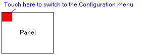
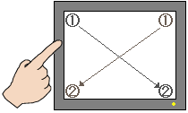
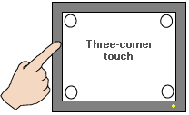

|
|
|
|
|
|
|
|
Property |
Description |
|
Type |
Read-only property that identifies the hardware platform selected for the application to run on. For more information, see Section 4.5.1.1, General. |
|
Model |
Read-only property that identifies the target model selected for the application to run on. For more information, see Section 4.5.1.1, General. |
|
Front USB Ports on Display |
This property displays and is enabled for HMIGTU Premium Display target machines. For HMIGTU target machines that are not Premium Display, this property displays but is disabled. For more information on the target machines that are equipped with front USB ports, see Appendix 5, Hardware Specifications. |
|
USB Port (Host) |
Select this option to enable the Front USB Type A port (host) on the display. If you disable this option, the operator will not be able to access the system through the front USB port. |
|
Mini USB Port (Device) |
Select this option to enable the Front USB mini-B port (device) on the display. If you disable this option, the operator will not be able to access the system through the front USB port. |
|
To Configuration |
Specify a method for accessing Vijeo-Designer's run time configuration menu. Select None, Top Left Corner, 2 Corner, 3 Corner, Top Left / 2 Corner, or Top Left / 3 Corner. Not all targets support every To Configuration setting. For a list of the settings supported by the different targets, see Appendix 5, Hardware Specifications.



|
|
Power supply for COM1 Port |
This feature allows you to use the COM1 port as a power supply. Not all targets support this feature, see Appendix 5, Hardware Specifications. For more information on this feature, see Section 26.3.5, Setting Up Target Machine Options. |
|
Backlight |
Backlight Control lets you change the backlight color of target machines and automatically shut off the backlight after a period of inactivity. Backlight Color lets you change the backlight color of the target machine. The backlight turns back on when an alarm occurs or the user touches any of the following: panel screen, Function Key, Mouse, or Keyboard.
|
|
Control |
Clear the check box to set the target's backlight to ON. Select the checkbox to set the number of minutes of inactivity the target waits before shutting off the backlight, acting as a screen saver for the target. The available values are 1, 2, 5, 10, 15, and 30 minutes. |
|
Color |
You can use one backlight color to indicate normal operating conditions and a different backlight color to indicate a critical error. Select the check box then enter an integer variable or expression to control the backlight color at run time. Write a valid color value to the backlight color variable to change the backlight color immediately. Write a value of 255 to relinquish backlight control based on the priority of the events that occur. For more information, see Section 16.5.2, Changing the Backlight Color. |
|
Alarm Backlight Control |
Set to Enable so that backlight control can be based on the alarms that occur. For more information on alarm severity, see Section 16.2.5, Severity. You can set up a specific backlight color for all alarms, or you can map alarm severities to backlight colors. To set up backlight color for alarms, define the following properties.
|
|
Windows Control |
When configuring a target machine, you can define whether to use Windows keyboard, mouse, and application window controls.
|
|
DIOPort Out 1 |
Select which function (Alarm or Error) you want to output to the DIO port. DIO Port 0 always outputs the Buzzer. For information about the DIO port, see Section 24.6, DIO Ports.
|
|
Printer |
If Printer is Enabled, you can print alarm messages at runtime. For more information, see Section 16.3.5, Printing Alarm and Event Messages. |
|
Printer Type |
Available only when Printer is set to Enabled. Specify the type of printer for the target. For more information on printer specifications and the types of printers that targets support, see Section, 27.1.2, Setting Up the Printer. |
|
Printer Setup |
Available
only when Printer is set to Enabled. When you click |
|
Barcode Input (Keypad) |
Set the bar code input mode by selecting Direct Input or Use Enter Key. For information about these barcode inputs, see Section 24.1.3, Direct Input and Use Enter Key Input Modes. |
|
Keyboard |
Ensure the USB keyboard is plugged in to a supported target's USB port, and set the property to Enabled to activate the USB keyboard. For a list of the targets that support the USB keyboard, see Appendix 5, Hardware Specifications. |
|
Keyboard Language |
Use the drop-down list to specify the language the USB keyboard uses. |
|
Mouse |
Ensure the USB mouse is plugged in to a supported target, and set the property to Enabled to activate the USB mouse. For a list of the targets that support the USB mouse, see Appendix 5, Hardware Specifications. The mouse cursor displays as an arrow when it is not in a touch area and displays as a hand image when it is in a touch area. |
|
Auto-hide Time out |
Use the drop-down list to specify the time-out (in seconds). At Runtime, once time-out expires, the mouse cursor is hidden and the mouse buttons become disabled. Move your mouse to bring back the mouse cursor display and enable the mouse buttons. |
|